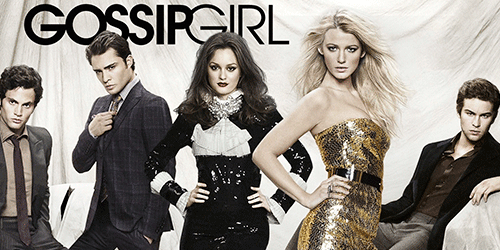

Gossip Girl
A série, sobre jovens estudantes das escolas de elite no Upper East Side de Manhattan em Nova York, segue quando Serena van der Woodsen retorna à cidade após ter ficado seis meses fora em um internato e se mantido fora do alcance de amigos e conhecidos. Os acontecimentos e histórias de cada personagem são narrados em um site por uma blogueira anônima, que atende pelo pseudônimo "Gossip Girl".
Gossip Girl narra os escândalos de Serena e seus amigos desde a oitava série de Serena, quando a garota ficou com seu vestido branco todo molhado dentro de um avião na viagem de excursão da escola. Desde então, Serena virou a vitima preferida de Gossip Girl. Magoada pelo fato de Serena não ter dado nenhuma noticia e ainda por ter passado por gravíssimos problemas familiares sozinha, Blair Waldorf começa excluindo socialmente a melhor amiga e mantendo distância de Serena, como punição pela total perda de contato durante sua ausência.
Envolvidos na trama temos também Nate Archibald e seu amigo de infância, Chuck Bass, e os irmãos até então "apagados" Dan Humphrey e Jenny Humphrey, além da amiga de infância de Dan, Vanessa Abrams. Fazendo parte da trama há também o irmão de Serena, Erik, sua mãe Lily van der Woodsen e Rufus Humphrey, separado de sua esposa Alison , pais de Dan e Jenny e uma impostora, Ivy Dickens que se passa pela prima de Serena (Esta ingressa na série na quarta temporada e se torna personagem principal na quinta temporada). A partir da quinta temporada Jenny Humphrey e Vanessa Abrams saem do elenco do seriado, porém fazem algumas participações especiais.
Elenco
- Kristen Bell - Narradora / Gossip Girl
- Blake Lively - Serena van der Woodsen
- Leighton Meester - Blair Waldorf
- Penn Badgley - Dan Humphrey
- Chace Crawford - Nate Archibald
- Ed Westwick - Chuck Bass
- Kelly Rutherford - Lily van der Woodsen
- Matthew Settle - Rufus Humphrey
- Taylor Momsen - Jenny Humphrey
- Jessica Szohr - Vanessa Abrams
- Kaylee DeFer - Ivy Dickens